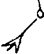
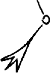
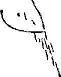
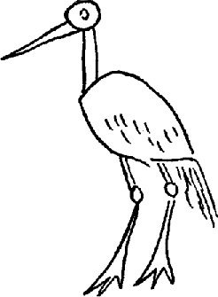

Khi còn là đứa trẻ tôi được xem một bức tranh - một dạng tranh động vì người họa sĩ vừa vẽ vừa kể câu chuyện cho khán giả. Lần nào cũng vậy, lời kể chẳng bao giờ thay đổi.
Chàng trai nọ sống trong căn nhà tròn nhỏ xíu có một ô cửa sổ tròn nhỏ xíu và mảnh vườn tam giác trước nhà nhỏ xíu.
Cách ngôi nhà không xa có một cái ao đầy cá.
Đêm ấy, choàng tỉnh bởi một tiếng động lớn, chàng ra ngoài xem có chuyện gì rồi, trong bóng tối, lần theo con đường dẫn tới bờ ao.
Tới đây người kể chuyện bắt đầu vẽ, tựa đường hành binh trên bản đồ quân sự, sơ đồ lối chàng trai nọ đã đi.
Trước tiên chàng ba chân bốn cẳng chạy về hướng Nam. Tới đây chàng vấp phải một tảng đá giữa đường, rồi đi thêm chút nữa chàng thụt xuống một lạch nước, bò lên, rơi vào một con lạch, lội qua, lại sa vào con lạch thứ ba, rồi lồm cồm bò dậy khỏi đó.

Nhận ra mình nhầm, chàng hộc tốc chạy về hướng Bắc. Song tới đây một lần nữa tiếng động dường như vẳng tới từ phía Nam, thế là chàng lại bươn bả phóng ngược lại. Thoạt tiên chàng vấp phải một tảng đá nằm giữa đường, rồi lát sau rơi xuống con mương, leo lên, lại rơi tõm vào một con mương khác, bò khỏi đó rồi sa xuống con mương thứ ba, và cũng trầy trật mãi mới trèo được lên.

Lúc này anh chàng nghe rành rành tiếng động ấy phát ra ở cuối ao. Chàng ta tất tả lao tới, thấy bờ ao có một lỗ thủng tướng, và nước, cùng cá, đang chảy qua đó. Chàng hối hả lao vào bít lại, và chỉ khi công việc hoàn tất mới quay về đánh tiếp một giấc.

Sáng hôm sau, chàng trai nhìn qua ô cửa sổ tròn tí xíu của mình - câu chuyện kết thúc cực kì bất ngờ - chàng ta thấy gì?

Một con cò!
Tôi rất mừng vì được nghe câu chuyện này và sẽ nhớ tới nó ở những thời khắc cần thiết. Anh chàng trong chuyện đã bị lừa gạt ác nghiệt, và gặp nhiều trắc trở trên con đường của mình. Chàng ta ắt đã bụng bảo dạ: “Khiếp quá, hết sa xuống lại leo lên! Quả là chuyến đi xui xẻo!” Chàng ta hẳn cũng tự hỏi ý nghĩa của hết thảy gian truân này là gì và chẳng thể nghĩ đó lại là một con cò. Nhưng trải qua tất cả chàng vẫn đeo đuổi mục đích, chẳng gì khiến được chàng phải quay về nhà, chàng hoàn thành chặng đường của mình và giữ vững niềm tin. Chàng trai đã được tưởng thưởng. Sáng hôm sau chàng ta thấy con cò. Hẳn khi đó chàng đã cười phá lên.
Chốn tù túng, hố thẳm tối tăm tôi đang nằm đây, ở trong bộ vuốt của loài chim nào? Lúc bức họa đường đời tôi hoàn tất, liệu tôi sẽ nhìn ra, cả những người khác liệu cũng sẽ nhìn ra, một con cò?
Thưa Nữ Hoàng, bà đang phán truyền cho tôi phải khơi lại những đớn đau chẳng lời nào tả xiết *. Thành Troy cháy rụi, bảy năm tha hương, mười ba con tàu đắm. Thứ gì sẽ được hun đúc từ mọi nỗi truân chuyên ấy? “Dáng vẻ thanh lịch tột cùng, phong thái đàng hoàng chững chạc, và nết ân cần ngọt ngào.”
Bạn cảm thấy khiếp sợ khi đọc lời tuyên tín thứ hai của Thiên Chúa giáo: Ngài chịu đóng đanh trên cây Thánh-giá, chết và táng xác, xuống ngục tổ tông, ngày thứ ba bởi trong kẻ chết mà sống lại rồi lên trời, và ngày sau sẽ lại xuống phán xét kẻ sống cùng kẻ chết.
Con đường cũng lên xuống gian nan hệt nẻo đường của anh chàng trong chuyện kể. Thứ gì được kết tinh từ mọi nỗi gian khó ấy? - lời hai trong Kinh Tin kính của phân nửa nhân loại.
Tiếng Latinh trong nguyên bản: Infandum, Regina, jubes renovare dolorem . Được trích từ Hùng Ca Aeneas của nhà thơ La Mã cổ đại Publius Vergilius Maro (Virgil), đây là cầu Aeneas thoái thác lúc nữ hoàng Dido yêu cầu chàng thuật lại những gian truân đã trải qua như việc thành Troy thất thủ cũng như chuyến hành trình trải muôn vàn gian khó của nhóm Aeneas sau đó.